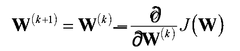

- Perceptrons
The architecture and behavior of a perceptron is very similar to biological neurons, and is often considered as the most basic form of neural network. Other kinds of neural networks were developed after the perceptron, and their diversity and applications continue to grow. It is easier to explain the constitutes of a neural network using the example of a single layer perceptron.

A single layer perceptron works as a linear binary classifier. Consider a feature vector [x1, x2, x3] that is used to predict the probability (p) of occurrence of a certain event.
- Weighing factors
Each input in the feature vector is assigned its own relative weight (w), which decides the impact that the particular input needs in the summation function. In relatively easier terms, some inputs are made more important than others by giving them more weight so that they have a greater effect in the summation function (y). A bias (wo) is also added to the summation.

- Activation function
The result of the summation function, that is the weighted sum, is transformed to a desired output by employing a non linear function (fNL), also known as activation function. Since the desired output is probability of an event in this case, a sigmoid function can be used to restrict the results (y) between 0 and 1.

Other commonly used activation functions are Rectified Linear Unit (ReLU), Tan Hyperbolic (tanh) and Identity function.
- Loss Function
In most learning networks, error is calculated as the difference between the actual output and the predicted output.

The loss functions are helpful to train a neural network. Given an input and a target, they calculate the loss, i.e difference between output and target variable.
Error J(w) is a function of internal parameters of model i.e weights and bias. For accurate predictions, one needs to minimize the calculated error. In a neural network, this is done using back propagation. The current error is typically propagated backwards to a previous layer, where it is used to modify the weights and bias in such a way that the error is minimized. The weights are modified using a function called Optimization Function.

Optimisation functions usually calculate the gradient i.e. the partial derivative of loss function with respect to weights, and the weights are modified in the opposite direction of the calculated gradient. This cycle is repeated until we reach the minima of loss function.

Thus, the components of a neural network model i.e the activation function, loss function and optimization algorithm play a very important role in efficiently and effectively training a Model and produce accurate results. Different tasks require a different set of such functions to give the most optimum results.